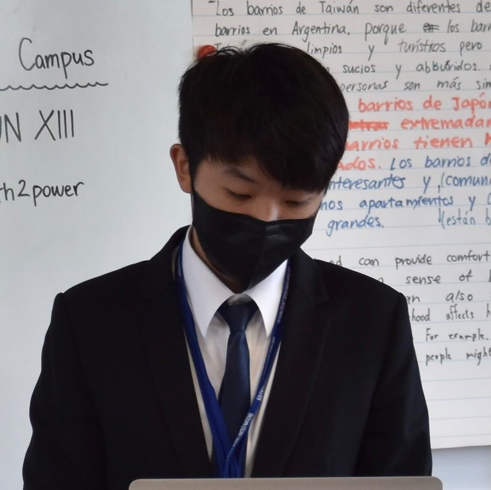
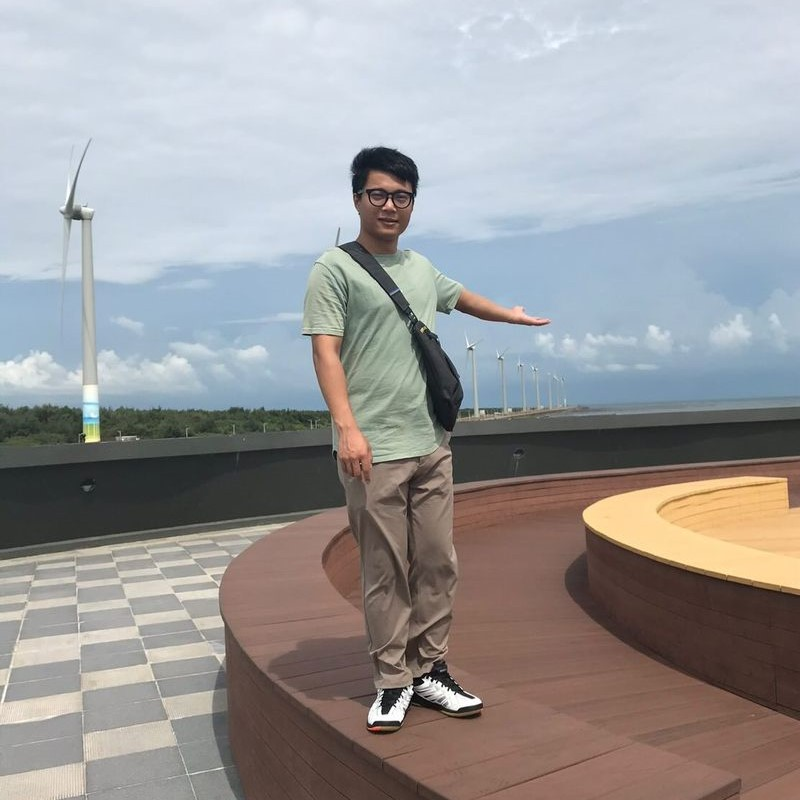

Bernardo Lin
"Dreams without goals are just dreams."

William Li
"Xcellerate your efforts."
Your challenge is to identify a new method to share and explain the design, process, or results of a NASA or partner space agency science research project through art, literature, and/or music. Using an arts-meets-science approach, consider how you could highlight the importance of the original finding and express its impact in a new way. How can you use a cultural lens (i.e., consider race, gender, ethnicity, etc.) to explain the design, process, and/or scientific results in a meaningful way to your audience through art? Feel free to color outside the lines—be creative, intuitive, and empathetic!
Etones is a project inspired by NASA Earth observatory’s image gallery, where extraordinary pictures of our beloved planet were taken by Earth-observing satellites, allowing researchers to study about a variety of areas without the need of visiting such as geographical information, changes in the area, expansions, weather…etc. Our project allows users to see the world that surrounds us from a different perspective. Users can hear the unique music that is generated from our planet and also learn about what’s going on with detailed descriptions from NASA’s observational research.
TechnoLion is a team from Taoyuan, made up of four typical members who share similar interests in programming, art, music, and space. This year, we presented a new idea by applying music and art to astronomy. Effectively using our outstanding skills and knowledge in software development. We create an artful project to help people look at the world in a more extraordinary way. Giving people a brand new experience and view of our world.
"Dreams without goals are just dreams."
"Xcellerate your efforts."
"Follow your heart, and listen when it speaks to you."
"Huh???????????"